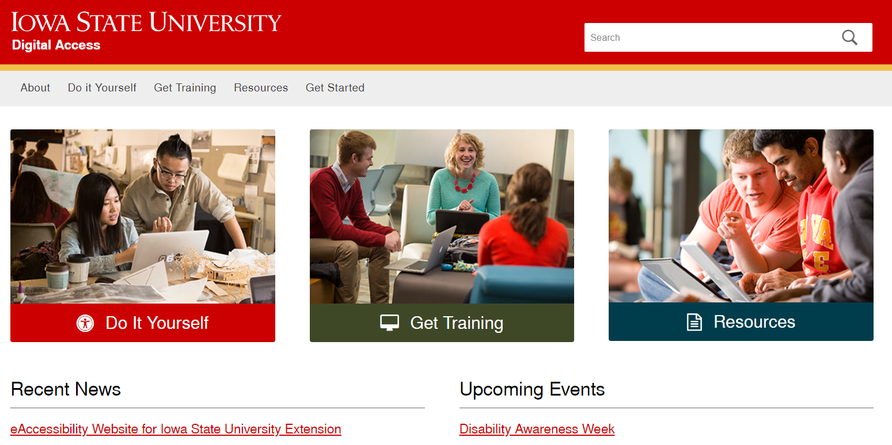

Digital A11y Research
Digital Accessibilty website research, from Discovery through Design
Role: UX Lead.
Skills: Experimental Design, Sample Recruitment, Semi-structured Interviews, Card Sorting, Prototyping.
Summary
I worked with students, staff, and faculty at Iowa State to discover the population's needs and current level of accessibility maturity, to rebuild the information architecture, and to update the voice of the page. In coordination with the designers and front-end developers on my team, I transformed the findings into recommendations for a user-centered digital accessibility website.
Problem Statement
Digital accessibility is the process of designing content which is inclusive to the widest possible audience, regardless of capability, disability, or technology. In the United States, roughly 26% of the population lives with at least one disability, according to the CDC (1). That number doesn't include people who have had a disability nor people who have temporary disabilities, such as a sprained ankle or a broken arm, nor does it speak to other populations who benefit from digital accessibility, for example, someone who doesn't have the latest smartphone or someone trying to watch a video in a noisy airport. This website is meant to keep Iowa State University up-to-date on digital accessibility, which means that it should be thorough in terms of content, pleasant to use, and easy to understand.
Figure 1. The digitalaccess.iastate.edu website at the time of the study's launch.In addition to redesigning the website (Figure 1), we also wanted to understand:
- What do faculty and staff already know about digital accessibility?
- What do students need or want to know?
- What content needs guides?
- How can the site be more broadly applicaple to all of Iowa State University?
Data Collection and Analysis
Because the website had not been touched in a couple of years, I started from scratch on building an understanding of what content should be on the site. The site had not seen any web-traffic, so we did not have access to metadata about where people went when they visited. Therefore, the first step was to talk to people and uncover user needs. Surveys guided the interview selection process, which guided the open card sort, which was leveraged to create the low-fidelity prototype referenced in usability testing.
Surveys
I used a brief survey to collect demographic information and self-reported knowledge about both accessibility and digital accessibility. The 5-minute survey was sent to the entire staff, faculty, and student population of Iowa State, and 735 of them responded. Of these, 208 respondents supplied their email and agreed to further involvement in the study.
The survey revealed some interesting trends, as shown in Figure 2; however, none of the differences between groups are significant, and knowing that Iowa Stater's feel like they know very little about digital accessibility, on average, tells us nothing about how much they actually know. That information comes from actually having conversations around the topics of digital accessibility and digital content.

Figure 2a. There was no difference in knowledge of digital accessibility by which position you hold at the university.

Figure 2b. Whether or not you have a disability or not has no significant effect on your self-reported knowledge of digital accessibility.

Figure 2c. Whether or not you know someone who has a disability does not have an effect on how much you think you know about digital accessibility.
Interviews
Interviews were conducted with a sample of respondents who agreed to participate in future portions of the study. This sample was stratified by position at the university, according to the university's reported distribution of graduate and undergraduate students, staff and faculty. Additional care was taken to ensure the interviews included people with disabilities and people who indicated that they might have a disability. I talked to 17 people in total; two faculty, five staff, three graduate students, and seven undergraduates. Two people had identified as having a disability, seven indicated they might have a disability, and eight reported no disabilities.
By examining the transcripts and the notes taken during the interviews, some themes emerged. The most interesting of these was "Information Access." Most people mentioned something related to the need for equal access to information, and when someone really fixated on this interpretation of digital accessibility, they tended to have also reported not having a disability, themselves. This is not incorrect, digital accessibility is concerned with access to information (e.g., visual information, the internet, digitized coursework materials). This was not something that had originally crossed my mind, however, and it is certainly one direction my team and I can move with the voice of the digital accessibility website.
Card Sort
In addition to analysis for themes, the interview results were transposed into actions for card sorting. Nine members of the subject pool which were representative of the range of roles at the university (four undergraduates, two graduate students, two staff, and one faculty) sorted the actions based on their perceived likeness. Each participant was asked to explain their sorted piles and were invited to make changes as they saw fit. A final sort was agreed upon and the data were tabulated.
Cluster analysis was run via RStudio on the tabluated data, and a dendrogram was formulated. Many possible solutions were suggested by the data, and a solution was identified by applying an understanding of human decision making in a way that reduced complexity and adhered to Hick's Law.
Usability Test
To test the usability of the low-fidelity prototype that was created following the analysis of the card sort data, a moderated expert review was conducted. Four university members who are well acquainted with the usability principles (1 interaction designer, 2 graduate students in human-computer interaction, and 1 professor of human factors) were recruited to think-aloud while they interacted with the drafted solution. They were also asked to give general advice based on the presence or absence of usability heuristics.
Conclusions
Some flaws in the menu structure and the naming scheme were identified, leading to a quick rework of the prototype before the results were shared with the webdesign team. Because of the interviews used at the outset of the project, our team was able to prioritize the addition of digital accessibility information and assistive technology solutions. Also, this project positioned user-centered design in the viewport of IT professionals at Iowa State University. While the application of the UX process throughout the university will be slow (as is true for legacy companies and government organizations, in general), my team continues to work to evangalize the process to better our university.
Challenges
- Qualitative research
- Choosing appropriate user testing methodology
I was first trained as a Quantitative Experimental Psychologist; I can build and evaluate a survey, no problem. Likert scale is my middle name. Even structured interviews come pretty naturally. This was the first project in which I used semi-structured interviews and observation protocols. Listening to my audio recordings and reading my transcripts has taught me much about what probing strategies work, which ones don't, and how to build rapport without taking over the conversation.
I have used many user testing methods in other projects, but this was the first time I had full control over what I used to evaluate the needs of the users. I am still learning which methods are most appropriate for which situation, and how to properly create materials for use in those methods.
References
(1) https://www.cdc.gov/ncbddd/disabilityandhealth/infographic-disability-impacts-all.html